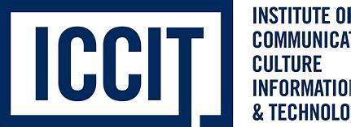
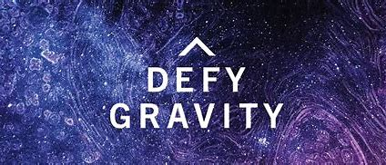

前端开发
- HTML / CSS
- 响应式页面结构
- 交互动效基础
About
我目前在 University of Toronto 就读，主攻 IT 与 CCIT 方向。我的兴趣集中在数字媒体、信息技术、交互原型和新技术应用，希望把前沿科技转化成更自然、更有记忆点的用户体验。

Featured Work
一个关于视觉叙事与体验表达的作品片段。新的版式让视频成为焦点，同时保留沉浸式暗色氛围。
Capabilities
Soundtrack
Contact
如果你想讨论网页、交互、数字媒体作品或任何有趣的想法，欢迎发消息给我。
往日辉煌，暗淡如常。今日灵光，起源之梁。
